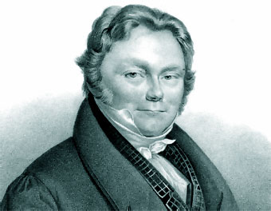
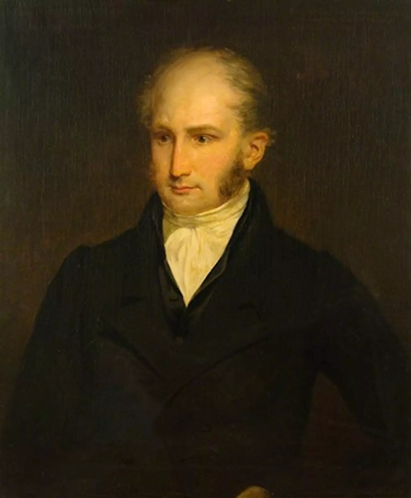
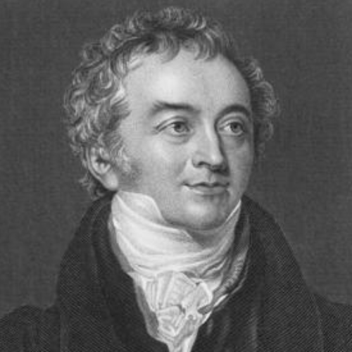
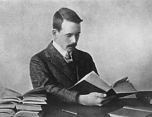

Actividad de inicio
- El moco de Dominick -
Se acuerdan del cuento del moco de Dominick, bueno les presento al señor Na y la señora Cl
El Señor Don Sodio y Doña Cloro. Quimicuento que relata la formación de un compuesto;
específicamente la formación del Cloruro de sodio. El señor don Sodio, debido a su carácter, vivía
cautivo y vigilado severamente por doña Kerosene. No debía salir de su encierro, pues en cuanto
estaba libre reaccionaba violentamente con el primero que se encontraba a su paso, se producían
acaloradas discusiones y la mayoría de las veces se escuchaban pequeñas explosiones y hasta
chispitas se veían iluminando el lugar. Era difícil escapar de doña Kerosene, ella era la única que lo
mantenía quieto, tranquilo y callado. Don Sodio pensaba, si logro escaparme, prometo portarme
bien y seré amable con todo el mundo, me encuentro tan solo y aislado en este encierro. De
pronto ve que la puerta está entre abierta y decide salir en un descuido de la señora Kerosene.
Antes de escapar se miró al espejo y se vio tan deslucido y opaco que decidió, arreglarse un
poquito. Rápidamente se afeitó y su piel presentó un hermoso brillo plateado e iridiscente. -¡Qué
bien luzco! - dijo. Se arregló su corbata y partió a dar una vueltecita. No había dado muchos pasos,
cuando observó que venía en sentido contrario una jovencita de aspecto etéreo, envuelta en una
nube de encaje amarillo verdoso y esparciendo un olor penetrante que hizo carraspear a don
Sodio. Reconoció al instante quien era.
- ¡Pero si es doña Cloro! - Exclamó. Que bien se ve. Y sin que ella se lo pidiera se arrancó el primer
electrón que tenía a mano y se lo entregó en señal de amistad y admiración. Había prometido no
ser violento. Doña Cloro recibió esta muestre tan espontánea de amistad con gran entusiasmo y
alborozo, pues sentía una gran fascinación por los electrones. Ninguno de los dos había visto el
bullicio y algarabía que producía este encuentro. Hubo un aumento de temperatura en el
ambiente, don Sodio, sintió que algo cambiaba en él profundamente, parecía que al entregar el
electrón se le hubiera ido también su identidad. ¿Cómo es posible, se decía, que esta pequeñísima
parte mía, que ya no está presente me esté produciendo tantos trastornos? Al mismo tiempo que
esto le sucedía a don Sodio, doña Cloro también experimentaba: su hermoso y vaporoso vestido de
encaje amarillo verdoso fue desapareciendo y su olor penetrante se extinguió. ¿Quién iba a pensar,
se decía, que el electrón que de don Sodio, me iba a causar tantos problemas? Y se fue
desvaneciendo. Rápidamente y en reemplazo total de doña Cloro y don Sodio, apareció una
figurita blanca y saladita, sin olor, la princesita Cloruro de Sodio, más conocida popularmente con
el apodo de sal de comer. Nada de ella recuerda a sus progenitores. Ella es tan blanca y cristalina,
tan tranquila, rara vez se altera. El aire no le produce ningún trastorno, acepto cuando está
húmedo, que la pone aguachenta. Quiso Cloruro de Sodio conocer el lugar y se fue a pasear a una
hermosa playa. Al mirar el mar se quedó fascinada: las olas iban y venían, la espuma que se
formaba era como un encaje que podría ser un hermoso adorno de su vestido blanco. Se inclinaba
para recoger un poco de espuma, cuando una gigantesca ola la envolvió y la princesita Cloruro de
Sodio cayo de cabeza al mar. Tragó mucha agua, ésta le pareció insípida, no tenía sabor alguno. Al
mismo tiempo, sintió que su cuerpecito se deshacía en miles de pedacitos. Aparentemente había
desaparecido, pero sus diminutas partículas se repartieron en la inmensidad del mar. El agua
lentamente fue adquiriendo el sabor salado de la princesita. Ella mientras tanto decía: ¡Qué
curioso lo que me ha sucedido! Yo no me veo, nadie me puede ver, pero estoy en el agua y mi
presencia se nota en el sabor del agua. Pienso, se decía, que alguien sacará un poco de agua de
mar y el agua se evaporará lentamente, parte de los cristales salados que forman mi cuerpo, se
podrían recuperar. Desde entonces el agua de mar tiene ese sabor salado tan característico y la
princesita Cloruro de Sodio llega a todas partes. Todos la conocen. En nuestras casas su lugar
habitual es el salero, pero también la encontramos en las comidas, haciéndolas más sabrosas. La
llevamos en la sangre y cuando alguien llora, se desliza disuelta en lágrimas, que tienen su sabor. Si
deseamos observarla, debemos alejarla del agua, así la veremos blanquita y cristalizada. Pero si
este sólido se moja, se deshace y no la vemos más. Sin embargo, allí está, diminuta e invisible.
Cambia de apariencia, pero sigue siendo la saladita princesita Cloruro de Sodio.
-
¿En qué líquido se debe guardar Don Sodio? ¿Por qué?
-
¿Qué aspecto tiene don Sodio?
-
¿Qué entrega fácilmente Don Sodio a Doña Cloro?
-
¿Qué variable cambia en el ambiente, en esa entrega?
-
¿Qué aspecto presenta doña Cloro?
-
¿Qué sustancia se forma entre doña Cloro y don Sodio?
-
¿Qué aspecto presenta la princesita?
-
¿Por qué el mar es salado?
-
¿Dónde es posible encontrar a la princesita Cloruro de Sodio?

Notación Química de Berzelius
Jöns Jacob Berzelius, médico y químico sueco. Codificó los elementos según la primera letra de su nombre latino, agregando una segunda letra cuando había necesidad de diferenciar dos elementos cuyo nombre comenzaba con la misma letra inicial.
Ley de las proporciones fijas
William Proust

William Proust, farmacéutico y químico francés, propuso la siguiente ley: la combinación de elementos se realiza en una relación en peso constante, independientemente del proceso seguido para formarlo. Es decir, los elementos que lo conforman mantienen una proporción fija en peso para cualquier muestra pura de un compuesto.
Ley de las triadas -
Johann Döbereiner

Las triadas de dobereiner representan uno de los primeros experimentos que se llevaron a cabo para clasificar los elementos químicos, dependiendo de la semejanza en sus características, asociándolos con sus pesos atómicos.
Cloro
(35.45 u)
Bromo
(79.9 u)
Yodo
(126.9 u)
Calcio
(40 u)
Estroncio
(87.6 u)
Bario
(137.3 u)
Azufre
(32.1 u)
Selenio
(79 u)
Telurio
(127.6 u)
Ley de las octavas
Jhon Newlands

John Newlands, químico inglés, redactó un trabajo en 1863 en el que clasificaba los 56 elementos estableciendo 11 grupos basados en propiedades físicas similares y mencionaba que en muchos pares de elementos similares existían diferencias en la masa atómica relacionadas con algún múltiplo de ocho.
Primera tabla periódica
Dimitri Mendeléyev

Ordenó su tabla en orden creciente de las masas atómicas de los elementos. demostró que los elementos con propiedades químicas semejantes aparecían periódicamente, dando lugar a ocho grupos. En algunos lugares faltaba un elemento, pero no dudó en predecir su existencia y su comportamiento químico.

Clasificación de Henry Moseley
Henry Moseley, en 1912, demuestra que la tabla periódica debe ordenarse por el número atómico. La ley de Mendeleiév condujo a la tabla periódica actual, se utilizó el número atómico como número ordenador de los elementos, y se estructuró en dieciocho grupos o columnas y siete periodos o filas.